دوربین را روی تصویر بستهبندی بگیر — پس از شناسایی، بازی دوز فعال میشود.
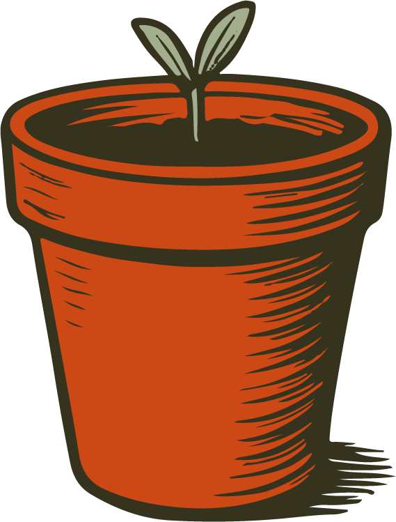 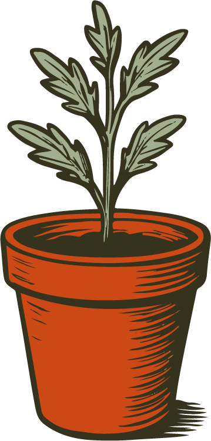 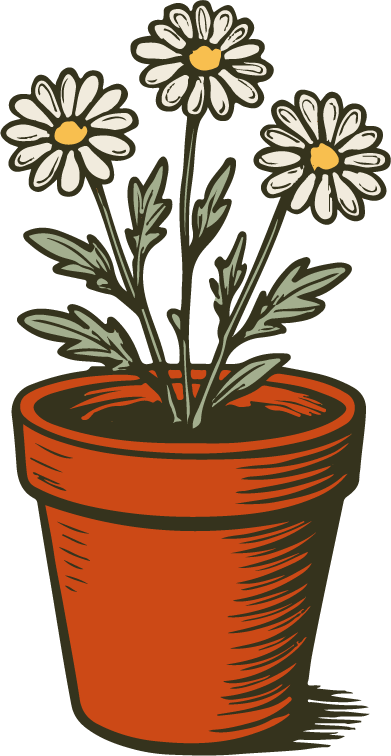
رشد سبز
برای شروع دکمهٔ زیر را بزن، سپس دوربین را روی بستهبندی بگیر.
شروع بازی
نمایش تست (بدون تارگت)
رشد سبز
شروع دوباره
لطفاً جاوااسکریپت را فعال کنید.
 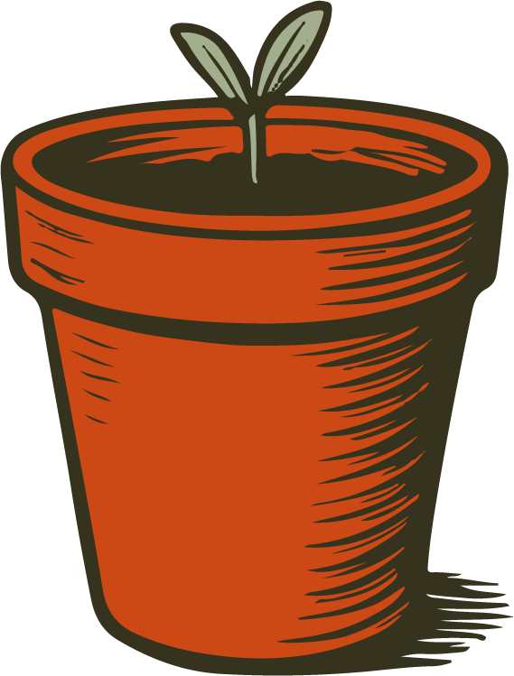
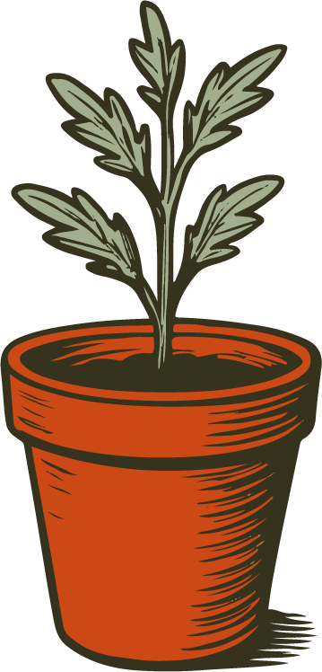
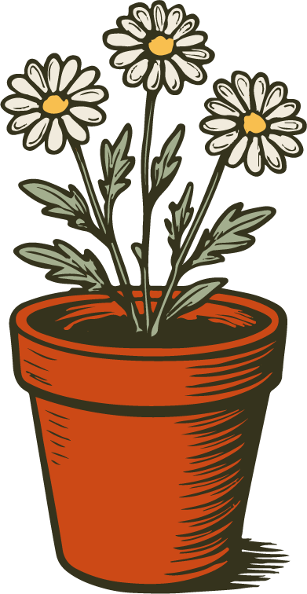
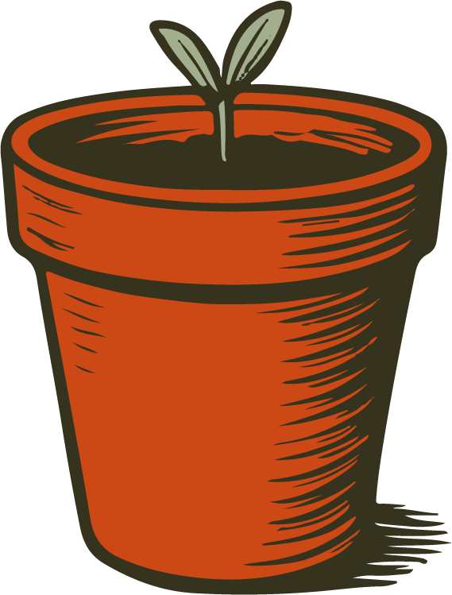
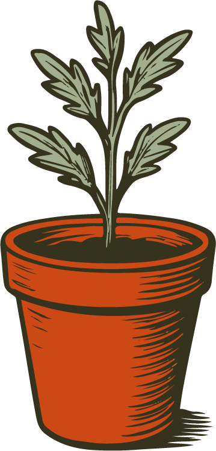
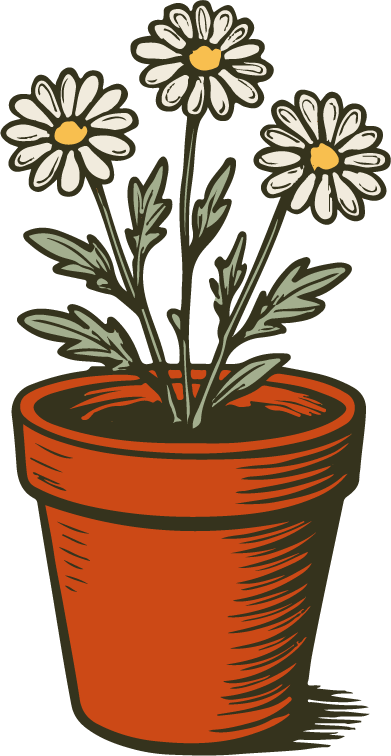
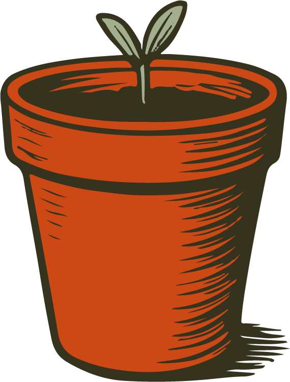
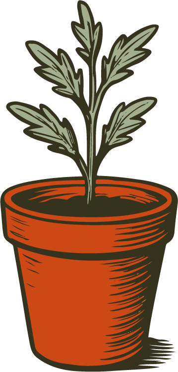
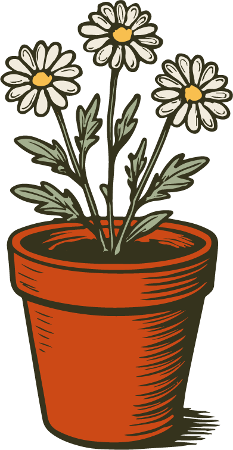
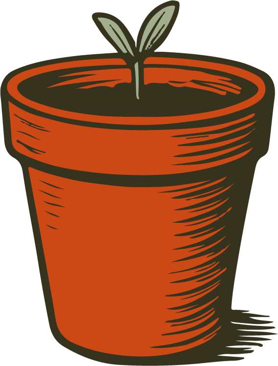
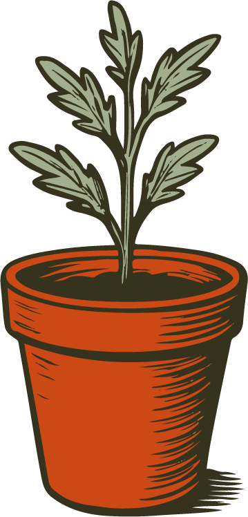
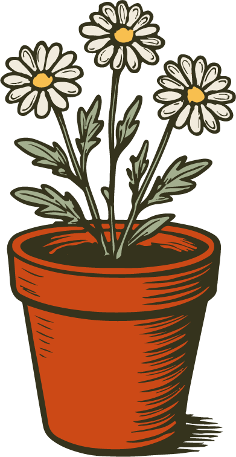